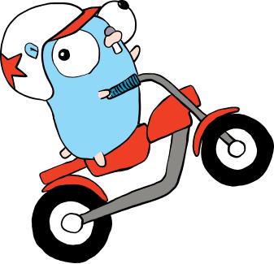

第五 图片
随着互联网、社交媒体、电子商务的发展，图片作为一个重要的信息载体，被广泛应用。“一图胜过千言万语”、“有图有真相”、“发个朋友圈”。也催生了美颜、马赛克、PS（Photoshop）等相关技术。
本章将从图片的本质出发，深入剖析像素编码原理、各种图片格式的底层机制，并通过 Rust 代码实现图片的读取、处理、转换等操作。
5.1 图片的本质
5.1.1 像素
图片（Image）本质上是一个二维的像素矩阵。像素（Pixel，Picture Element 的缩写）是构成数字图像的最小单元。每个像素携带颜色信息，所有像素按照行列排列就构成了一幅完整的图像。
一张分辨率为 $W \times H$ 的图片，共有 $W \times H$ 个像素。例如，一张 $1920 \times 1080$ 的 Full HD 图片共有 $2,073,600$ 个像素。
5.1.2 分辨率
分辨率（Resolution）描述了图像中包含的像素数量，通常用“宽 x 高“表示。常见的分辨率标准：
| 名称 | 分辨率 | 像素总数 | 应用场景 |
|---|---|---|---|
| QQVGA | 160 x 120 | 19,200 | 早期手机 |
| VGA | 640 x 480 | 307,200 | 早期摄像头 |
| HD | 1280 x 720 | 921,600 | 高清视频 |
| Full HD | 1920 x 1080 | 2,073,600 | 主流显示器 |
| 2K (QHD) | 2560 x 1440 | 3,686,400 | 高端显示器 |
| 4K (UHD) | 3840 x 2160 | 8,294,400 | 专业显示器/电视 |
| 8K (UHD-2) | 7680 x 4320 | 33,177,600 | 广播级制作 |
5.1.3 颜色空间
颜色空间（Color Space）定义了如何用数值来表示颜色。不同的颜色空间有不同的应用场景。
RGB 颜色空间
RGB（Red, Green, Blue）是最常用的加色模型，用于显示器、手机屏幕等发光设备。每个通道取值范围为 $[0, 255]$（8位），共可表示 $256^3 = 16,777,216$ 种颜色。
一个像素的 RGB 值可以表示为三元组 $(R, G, B)$，其中：
$$C = R \cdot (1, 0, 0) + G \cdot (0, 1, 0) + B \cdot (0, 0, 1)$$
CMYK 颜色空间
CMYK（Cyan, Magenta, Yellow, Key/Black）是减色模型，用于印刷行业。RGB 和 CMYK 之间的转换关系：
$$K = 1 - \max(R, G, B)$$ $$C = \frac{1 - R - K}{1 - K}$$ $$M = \frac{1 - G - K}{1 - K}$$ $$Y = \frac{1 - B - K}{1 - K}$$
YUV 颜色空间
YUV 将亮度（Y）和色度（U、V）分离，广泛用于视频压缩和传输。人眼对亮度变化更敏感，因此可以对色度分量进行更大的压缩。RGB 到 YUV 的转换（BT.601 标准）：
$$Y = 0.299R + 0.587G + 0.114B$$ $$U = -0.147R - 0.289G + 0.436B$$ $$V = 0.615R - 0.515G - 0.100B$$
HSV 颜色空间
HSV（Hue, Saturation, Value）更符合人类对颜色的直觉感知：
- H（色相）：颜色类型，取值 $[0, 360)$
- S（饱和度）：颜色的纯度，取值 $[0, 1]$
- V（明度）：颜色的明暗，取值 $[0, 1]$
#![allow(unused)]
fn main() {
/// RGB 转 HSV
fn rgb_to_hsv(r: u8, g: u8, b: u8) -> (f64, f64, f64) {
let r = r as f64 / 255.0;
let g = g as f64 / 255.0;
let b = b as f64 / 255.0;
let max = r.max(g).max(b);
let min = r.min(g).min(b);
let delta = max - min;
// 计算色相 H
let h = if delta == 0.0 {
0.0
} else if max == r {
60.0 * (((g - b) / delta) % 6.0)
} else if max == g {
60.0 * (((b - r) / delta) + 2.0)
} else {
60.0 * (((r - g) / delta) + 4.0)
};
// 计算饱和度 S
let s = if max == 0.0 { 0.0 } else { delta / max };
(h, s, max)
}
}5.2 像素编码原理
5.2.1 位深
位深（Bit Depth）决定了每个像素可以表示的颜色数量。位深越大，颜色越丰富，但文件也越大。
| 位深 | 每通道位数 | 每像素位数（RGB） | 可表示颜色数 | 应用场景 |
|---|---|---|---|---|
| 1-bit | 1 | 3 | 8 | 黑白图像 |
| 8-bit | 8 | 24 | 16,777,216 | 标准图像 |
| 16-bit | 16 | 48 | $2.81 \times 10^{14}$ | 专业摄影 |
| 32-bit | 32 (float) | 96 | 极大 | HDR、医学成像 |
一张 $1920 \times 1080$ 的图片，在 24 位色深下的原始数据大小为：
$$1920 \times 1080 \times 24 \text{ bits} = 49,766,400 \text{ bits} \approx 5.93 \text{ MB}$$
5.2.2 Alpha 通道
Alpha 通道用于表示像素的透明度，取值范围 $[0, 255]$，其中 0 表示完全透明，255 表示完全不透明。带有 Alpha 通道的图像称为 RGBA 图像。
RGBA 像素在内存中的排列方式通常为：
字节 0: R (红色)
字节 1: G (绿色)
字节 2: B (蓝色)
字节 3: A (透明度)
Alpha 混合公式（将前景色与背景色混合）：
$$C_{out} = \alpha \cdot C_{fg} + (1 - \alpha) \cdot C_{bg}$$
其中 $\alpha$ 为归一化后的透明度值 $[0, 1]$。
5.3 图片格式详解
5.3.1 BMP（Bitmap）
BMP 是 Windows 系统的标准图像格式，采用无压缩方式存储像素数据，文件体积较大但解码简单。
文件结构：
┌─────────────────────┐
│ BMP 文件头 (14字节) │ ← 文件类型、文件大小、偏移量
├─────────────────────┤
│ DIB 信息头 (40字节) │ ← 宽度、高度、位深、压缩方式
├─────────────────────┤
│ 调色板 (可选) │ ← 仅用于低位深图像
├─────────────────────┤
│ 像素数据 │ ← 按行存储，每行4字节对齐
└─────────────────────┘
BMP 的像素数据是从下到上存储的（即图像的最后一行在文件的最前面），且每行数据需要按 4 字节对齐。例如，宽度为 3 的 24 位 BMP 图像，每行需要 $3 \times 3 = 9$ 字节，对齐后为 12 字节（补 3 字节填充）。
5.3.2 JPEG（Joint Photographic Experts Group）
JPEG 是网络上最流行的有损压缩图像格式，在保留较高图像质量的同时拥有很高的压缩比。
压缩流程：
原始图像 → 颜色空间转换(YCbCr) → 分块(8x8) → DCT变换 → 量化 → 熵编码 → JPEG文件
离散余弦变换（DCT）
JPEG 将图像分割为 $8 \times 8$ 的像素块，对每个块进行二维 DCT 变换：
$$F(u,v) = \frac{1}{4}C(u)C(v)\sum_{x=0}^{7}\sum_{y=0}^{7}f(x,y)\cos\frac{(2x+1)u\pi}{16}\cos\frac{(2y+1)v\pi}{16}$$
其中：
$$C(k) = \begin{cases} \frac{1}{\sqrt{2}} & k=0 \ 1 & k>0 \end{cases}$$
DCT 将空间域的像素值转换为频率域的系数，低频系数集中在左上角（代表图像的大致轮廓），高频系数在右下角（代表细节）。
量化
量化是 JPEG 有损压缩的核心步骤。通过量化表将 DCT 系数除以对应的量化步长并取整：
$$F_Q(u,v) = \text{round}\left(\frac{F(u,v)}{Q(u,v)}\right)$$
量化步长越大，压缩比越高，但图像质量损失也越大。JPEG 标准定义了质量参数（1-100），通过缩放默认量化表来控制压缩质量。
熵编码
量化后的系数经过 Zigzag 扫描（将二维系数排列为一维序列，从低频到高频），然后使用 Huffman 编码或算术编码进行压缩。
5.3.3 PNG（Portable Network Graphics）
PNG 是一种无损压缩的位图格式，支持 Alpha 通道，广泛用于网页和图形设计。
压缩算法：LZ77 + Huffman
PNG 使用 DEFLATE 压缩算法，该算法结合了两种技术：
- LZ77：使用滑动窗口查找重复的字符串模式，用“距离-长度“对替换重复数据
- Huffman 编码：对出现频率不同的符号使用不同长度的编码，高频符号用短编码
PNG 文件结构：
┌─────────────────────┐
│ PNG 签名 (8字节) │ 固定值: 89 50 4E 47 0D 0A 1A 0A
├─────────────────────┤
│ IHDR 数据块 │ 宽度、高度、位深、颜色类型、压缩方法等
├─────────────────────┤
│ 可选数据块 │ PLTE(调色板)、tEXt(文本)、gAMA(伽马)等
├─────────────────────┤
│ IDAT 数据块 │ 压缩后的图像数据（可多个）
├─────────────────────┤
│ IEND 数据块 │ 文件结束标记
└─────────────────────┘
隔行扫描（Adam7）
PNG 支持 Adam7 隔行扫描，将图像分为 7 个通道（pass），按特定模式逐步加载：
Pass 1: █ . . █ . . █ . . (每8行每8列)
Pass 2: . █ . . █ . . █ . (每8行每4列)
Pass 3: █ █ . █ █ . █ █ . (每4行每4列)
Pass 4: . . █ . . █ . . █ (每4行每2列)
Pass 5: █ . █ █ . █ █ . █ (每2行每2列)
Pass 6: . █ █ . █ █ . █ █ (每2行每1列)
Pass 7: █ █ █ █ █ █ █ █ █ (每1行每1列)
这使得 PNG 在网络传输时可以先显示低分辨率预览，再逐步加载完整图像。
5.3.4 WebP
WebP 是 Google 于 2010 年推出的现代图像格式，旨在替代 JPEG 和 PNG。
特点：
| 特性 | WebP 有损 | WebP 无损 |
|---|---|---|
| 压缩算法 | VP8 (基于块预测 + DCT) | LZ77 + Huffman + 颜色缓存 |
| Alpha 通道 | 支持 | 支持 |
| 相比 JPEG | 文件小 25-35% | - |
| 相比 PNG | - | 文件小 26% |
| 动画 | 支持 (WebP Animation) | - |
| 浏览器支持 | 主流浏览器均支持 | 主流浏览器均支持 |
有损 WebP 编码流程：
原始图像 → 预测(帧内预测) → 变换(DCT/WHT) → 量化 → 算术编码 → WebP文件
WebP 有损模式使用 VP8 视频编码的帧内预测技术，支持 4x4 到 16x16 的宏块划分，比 JPEG 的固定 8x8 分块更灵活。
5.3.5 GIF（Graphics Interchange Format）
GIF 由 CompuServe 于 1987 年发布，是互联网早期最流行的图像格式之一。
特点：
- LZW 压缩：使用 Lempel-Ziv-Welch 无损压缩算法
- 256 色限制：每个 GIF 最多包含 256 种颜色（8 位索引色），通过调色板实现
- 支持动画：通过将多帧图像存储在同一个文件中，配合帧延迟时间实现动画效果
- 支持透明：可以指定一种颜色为透明色
GIF 动画原理：
┌─────────────────────┐
│ GIF 文件头 │ GIF87a 或 GIF89a
├─────────────────────┤
│ 逻辑屏幕描述符 │ 画布尺寸、全局调色板信息
├─────────────────────┤
│ 全局颜色表 (可选) │ 最多 256 种颜色
├─────────────────────┤
│ 图形控制扩展 │ 帧延迟时间、透明色索引
├─────────────────────┤
│ 图像描述符 + 像素数据 │ 第 1 帧
├─────────────────────┤
│ 图形控制扩展 │ 帧延迟时间
├─────────────────────┤
│ 图像描述符 + 像素数据 │ 第 2 帧
├─────────────────────┤
│ ... (更多帧) │
├─────────────────────┤
│ GIF 结尾标记 (0x3B) │
└─────────────────────┘
5.3.6 SVG（Scalable Vector Graphics）
SVG 是基于 XML 的矢量图像格式，与位图（BMP、JPEG、PNG 等）有本质区别。
位图 vs 矢量图：
| 特性 | 位图 (Raster) | 矢量图 (Vector) |
|---|---|---|
| 存储方式 | 像素矩阵 | 数学公式描述 |
| 缩放 | 放大后失真（锯齿） | 无限缩放不失真 |
| 文件大小 | 与分辨率正相关 | 与复杂度相关 |
| 适用场景 | 照片、复杂图像 | 图标、Logo、图表 |
| 编辑方式 | 像素级操作 | 修改路径和属性 |
SVG 示例：
<svg xmlns="http://www.w3.org/2000/svg" width="200" height="200">
<!-- 红色圆形 -->
<circle cx="100" cy="100" r="80" fill="red" stroke="black" stroke-width="2"/>
<!-- 蓝色矩形 -->
<rect x="20" y="20" width="60" height="40" fill="blue" rx="5"/>
<!-- 文本 -->
<text x="100" y="190" text-anchor="middle" font-size="16">Rust Logo</text>
</svg>
SVG 支持路径（path）、变换（transform）、渐变（gradient）、滤镜（filter）等丰富的图形功能，可以通过 CSS 和 JavaScript 进行动态控制。


5.4 EXIF 信息
EXIF（Exchangeable Image File Format）是嵌入在 JPEG、TIFF 等图像文件中的元数据标准，最初由日本电子工业发展协会（JEIDA）制定。
EXIF 记录了拍摄时的各种参数：
| 类别 | 包含信息 |
|---|---|
| 拍摄设备 | 相机品牌、型号、镜头信息 |
| 拍摄参数 | 光圈(F值)、快门速度、ISO感光度、焦距 |
| 图像参数 | 分辨率、方向、色空间 |
| GPS 定位 | 纬度、经度、海拔、拍摄时间 |
| 软件信息 | 处理软件名称和版本 |
安全提示：EXIF 中的 GPS 信息可能泄露拍摄地点，在分享照片前应注意清除敏感元数据。
5.5 Rust 图片处理实战
5.5.1 环境准备
在 Cargo.toml 中添加依赖：
[dependencies]
image = "0.25"
image crate 是 Rust 生态中最流行的图像处理库，支持 BMP、JPEG、PNG、GIF、WebP、TIFF、AVIF 等多种格式的编解码。
5.5.2 读取与写入各种格式
/*
[dependencies]
image = "0.25"
*/
use image::{DynamicImage, ImageFormat, io::Reader as ImageReader};
use std::fs::File;
fn main() -> Result<(), Box<dyn std::error::Error>> {
// 读取图片（自动识别格式）
let img = ImageReader::open("input.jpg")?
.with_guessed_format()?
.decode()?;
println!("图片尺寸: {}x{}", img.width(), img.height());
println!("图片颜色类型: {:?}", img.color());
// 保存为不同格式
img.save("output.png")?; // 根据扩展名自动选择格式
img.save_with_format("output.bmp", ImageFormat::Bmp)?;
img.save_with_format("output.webp", ImageFormat::WebP)?;
// 手动指定格式写入
let mut output = File::create("output.jpg")?;
img.write_to(&mut output, ImageFormat::Jpeg)?;
Ok(())
}5.5.3 图片裁剪
#![allow(unused)]
fn main() {
use image::GenericImageView;
fn crop_example() -> Result<(), Box<dyn std::error::Error>> {
let img = image::open("input.jpg")?;
let (width, height) = img.dimensions();
// 裁剪上半部分
let cropped = img.crop(0, 0, width, height / 2);
cropped.save("cropped_top.jpg")?;
// 裁剪中心区域
let crop_w = width / 2;
let crop_h = height / 2;
let cropped_center = img.crop(
(width - crop_w) / 2,
(height - crop_h) / 2,
crop_w,
crop_h,
);
cropped_center.save("cropped_center.jpg")?;
Ok(())
}
}5.5.4 图片缩放与缩略图生成
#![allow(unused)]
fn main() {
use image::{imageops::FilterType, GenericImageView};
use std::time::Instant;
fn resize_example() -> Result<(), Box<dyn std::error::Error>> {
let img = image::open("examples/scaledown/test.jpg")?;
// 不同的缩放滤波算法对比
let filters = [
("nearest", FilterType::Nearest), // 最近邻插值（最快，质量最低）
("triangle", FilterType::Triangle), // 三角插值（双线性）
("catmullrom", FilterType::CatmullRom),// Catmull-Rom 插值
("gaussian", FilterType::Gaussian), // 高斯插值
("lanczos3", FilterType::Lanczos3), // Lanczos3 插值（质量最高，较慢）
];
for &(name, filter) in &filters {
let timer = Instant::now();
let scaled = img.resize(400, 400, filter);
println!("使用 {} 算法缩放耗时: {:?}", name, timer.elapsed());
let mut output = File::create(format!("test-{}.png", name))?;
scaled.write_to(&mut output, ImageFormat::Jpeg)?;
}
// 生成缩略图（保持宽高比）
for &size in &[20_u32, 40, 100, 200, 400] {
let timer = Instant::now();
let thumbnail = img.thumbnail(size, size);
println!("生成 {}x{} 缩略图耗时: {:?}", size, size, timer.elapsed());
thumbnail.save(format!("test-thumb{}.png", size))?;
}
Ok(())
}
}各滤波算法对比：
| 算法 | 速度 | 质量 | 适用场景 |
|---|---|---|---|
| Nearest | 最快 | 最低 | 像素风格、游戏 |
| Triangle | 快 | 中等 | 一般缩放 |
| CatmullRom | 中等 | 较高 | 通用场景 |
| Gaussian | 中等 | 高 | 平滑缩放 |
| Lanczos3 | 较慢 | 最高 | 高质量缩放 |
5.5.5 像素级操作
灰度化
将彩色图像转换为灰度图像，使用加权平均法（ITU-R BT.601 标准）：
$$Gray = 0.299 \times R + 0.587 \times G + 0.114 \times B$$
#![allow(unused)]
fn main() {
use image::{DynamicImage, Rgba};
fn to_grayscale(img: &DynamicImage) -> DynamicImage {
let rgba_img = img.to_rgba8();
let mut output = rgba_img.clone();
for pixel in output.pixels_mut() {
let Rgba([r, g, b, a]) = *pixel else { continue };
let gray = (0.299 * r as f64 + 0.587 * g as f64 + 0.114 * b as f64) as u8;
*pixel = Rgba([gray, gray, gray, a]);
}
DynamicImage::ImageRgba8(output)
}
}二值化
将灰度图像转换为黑白图像（只有 0 和 255 两个值）：
#![allow(unused)]
fn main() {
use image::{DynamicImage, Rgba, GenericImage};
fn to_binary(img: &DynamicImage, threshold: u8) -> DynamicImage {
let gray_img = to_grayscale(img);
let (width, height) = gray_img.dimensions();
let mut output = image::GrayImage::new(width, height);
for y in 0..height {
for x in 0..width {
let pixel = gray_img.get_pixel(x, y);
let val = if pixel[0] > threshold { 255 } else { 0 };
output.put_pixel(x, y, image::Luma([val]));
}
}
DynamicImage::ImageLuma8(output)
}
}颜色反转（底片效果）
#![allow(unused)]
fn main() {
use image::{DynamicImage, Rgba};
fn invert_colors(img: &DynamicImage) -> DynamicImage {
let rgba_img = img.to_rgba8();
let mut output = rgba_img.clone();
for pixel in output.pixels_mut() {
let Rgba([r, g, b, a]) = *pixel else { continue };
*pixel = Rgba([255 - r, 255 - g, 255 - b, a]);
}
DynamicImage::ImageRgba8(output)
}
}亮度与对比度调整
#![allow(unused)]
fn main() {
use image::{DynamicImage, Rgba};
fn adjust_brightness_contrast(
img: &DynamicImage,
brightness: i16, // -255 到 255
contrast: f32, // 0.0 到 2.0（1.0 为原始）
) -> DynamicImage {
let rgba_img = img.to_rgba8();
let mut output = rgba_img.clone();
let factor = (259.0 * (contrast + 255.0)) / (255.0 * (259.0 - contrast));
for pixel in output.pixels_mut() {
let Rgba([r, g, b, a]) = *pixel else { continue };
let adjust = |c: u8| -> u8 {
let val = factor * (c as f32 - 128.0) + 128.0 + brightness as f32;
val.clamp(0.0, 255.0) as u8
};
*pixel = Rgba([adjust(r), adjust(g), adjust(b), a]);
}
DynamicImage::ImageRgba8(output)
}
}5.5.6 格式转换
/*
[dependencies]
image = "0.25"
*/
use image::{io::Reader as ImageReader, ImageFormat};
use std::path::Path;
/// 批量转换图片格式
fn convert_format(input: &Path, output: &Path, format: ImageFormat) -> Result<(), Box<dyn std::error::Error>> {
let img = ImageReader::open(input)?
.with_guessed_format()?
.decode()?;
let mut file = std::fs::File::create(output)?;
img.write_to(&mut file, format)?;
println!("已转换: {} -> {}", input.display(), output.display());
Ok(())
}
fn main() -> Result<(), Box<dyn std::error::Error>> {
// JPEG 转 PNG
convert_format(
std::path::Path::new("photo.jpg"),
std::path::Path::new("photo.png"),
ImageFormat::Png,
)?;
// PNG 转 WebP
convert_format(
std::path::Path::new("photo.png"),
std::path::Path::new("photo.webp"),
ImageFormat::WebP,
)?;
Ok(())
}5.5.7 图片水印
#![allow(unused)]
fn main() {
use image::{DynamicImage, GenericImage, imageops::overlay};
fn add_watermark(base_img: &DynamicImage, watermark: &DynamicImage, opacity: f32) -> DynamicImage {
let mut base = base_img.clone();
let (bw, bh) = base.dimensions();
let wm = watermark.resize(bw / 4, bh / 4, imageops::FilterType::Lanczos3);
let (ww, wh) = wm.dimensions();
// 将水印放在右下角
let x = bw.saturating_sub(ww + 20);
let y = bh.saturating_sub(wh + 20);
overlay(&mut base, &wm, x as i64, y as i64);
base
}
}5.6 OCR 光学字符识别
OCR（Optical Character Recognition，光学字符识别）是将图像中的文字转换为可编辑文本的技术。
OCR 的基本流程：
输入图像 → 图像预处理 → 文字区域检测 → 字符分割 → 字符识别 → 后处理 → 输出文本
预处理步骤：
- 灰度化：减少计算量
- 二值化：分离文字和背景
- 去噪：消除干扰
- 倾斜校正：修正图像角度
- 归一化：统一文字大小
主流 OCR 引擎：
| 引擎 | 语言 | 特点 | 许可证 |
|---|---|---|---|
| Tesseract | C++ | Google 维护，支持 100+ 语言 | Apache 2.0 |
| PaddleOCR | Python/C++ | 百度开源，中文识别优秀 | Apache 2.0 |
| EasyOCR | Python | 支持 80+ 语言，易用 | Apache 2.0 |
| Tesseract.js | JavaScript | 浏览器端运行 | Apache 2.0 |
应用场景：
- 身份证、银行卡、发票识别
- 车牌识别
- 文档数字化
- 手写文字识别
- 街景文字提取
在 Rust 中，可以通过 FFI 调用 Tesseract C 库，或者调用 PaddleOCR 的 HTTP 服务来实现 OCR 功能。
5.7 相关 Rust 库
| 库名 | 说明 | 链接 |
|---|---|---|
| image | Rust 最流行的图像处理库，支持多种格式编解码 | GitHub |
| imageproc | 基于image的图像处理算法库（边缘检测、形态学等） | GitHub |
| resvg | 高性能 SVG 渲染库 | GitHub |
| oxipng | PNG 无损优化工具 | GitHub |
| mozjpeg-sys | Mozilla 的 JPEG 编码器 Rust 绑定 | crates.io |
| libwebp-sys | Google WebP 编解码库 Rust 绑定 | crates.io |
| tesseract-rs | Tesseract OCR 的 Rust 封装 | crates.io |
| Luban | 接近微信朋友圈的图片压缩算法 | GitHub |
| iOS微信聊天，朋友圈图片压缩算法 | 微信图片压缩算法分析 | GitHub |
| Tesseract | C++ OCR 引擎 | GitHub |
| Tesseract.js | 浏览器端 OCR | GitHub |
| PaddleOCR | 百度开源 OCR | GitHub |
5.8 总结
图片格式对比
| 格式 | 压缩方式 | Alpha通道 | 动画 | 典型用途 | 文件大小 |
|---|---|---|---|---|---|
| BMP | 无压缩 | 否 | 否 | Windows 位图、简单存储 | 最大 |
| JPEG | 有损 (DCT) | 否 | 否 | 网页照片、摄影作品 | 小 |
| PNG | 无损 (LZ77+Huffman) | 是 | 否 | 网页图形、需要透明的场景 | 中等 |
| WebP | 有损/无损 | 是 | 是 | 现代网页、替代JPEG/PNG | 最小 |
| GIF | 无损 (LZW) | 索引色 | 是 | 简单动画、低色图像 | 中等 |
| SVG | 矢量 | 是 | 是(CSS/JS) | 图标、Logo、图表 | 最小(简单图形) |
关键公式汇总
| 公式 | 说明 |
|---|---|
| $Gray = 0.299R + 0.587G + 0.114B$ | RGB 转灰度 |
| $C_{out} = \alpha C_{fg} + (1-\alpha) C_{bg}$ | Alpha 混合 |
| $Y = 0.299R + 0.587G + 0.114B$ | RGB 转 YUV 亮度分量 |
| $F_Q = \text{round}(F/Q)$ | JPEG 量化 |
5.9 练习题
-
基础题：使用
image库读取一张 JPEG 图片，获取其宽度、高度和颜色类型，并输出到控制台。 -
格式转换：编写一个 Rust 程序，将一个目录下所有
.png文件批量转换为.webp格式。 -
像素操作：实现一个函数，将图片的红色通道增强 50%（即将每个像素的 R 值乘以 1.5，不超过 255）。
-
灰度化对比：分别实现平均值法（$Gray = (R+G+B)/3$）和加权平均法（BT.601）的灰度化，对比两种方法的效果差异。
-
缩略图生成器：编写一个命令行工具，接受一个图片路径和目标尺寸参数，生成指定大小的缩略图，并支持选择不同的缩放滤波算法。
-
EXIF 读取：使用
kamadak-exif或rexiv2crate 读取一张照片的 EXIF 信息，输出拍摄时间、光圈、快门速度和 GPS 坐标。 -
思考题：为什么 JPEG 不适合存储文字截图？如果需要压缩文字截图，应该选择什么格式？为什么？